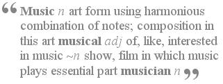
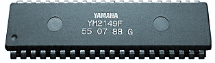
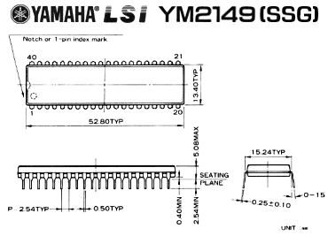
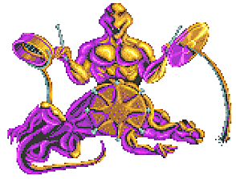

|


Whatever video game you may
have played, be it Pac Man or Mario Sunshine, I'm sure you
have enjoyed that experience. But how many of you
notice the music? It's an element of a computer game
that is either inconsequential to your experience (but
important never-the-less), or it is something you view as
integral to the gameplay and visuals. Just as music
plays an important role in the movies, being in some cases
as critical as the moving images, music in video games can
be as vital an element.
Music means different things
to different people, and music in games may not warrant
the appreciation that say, the music of Beethoven does.
Music created on the consoles of today is very different
to that produced on home computers and consoles of the
80's and early 90's, and I suspect many of you would
probably agree that its much better! Today's
consoles utilise highly advanced CD and DSP combinations
which produce studio quality reproductions, and game music
that is even good enough to receive a commercial release
of its own.
In the early days, consoles
could only "beep". Later, they produced different
levels of "beeps", and soon, as transistor technology
moved on, companies such as General Instruments, Casio,
Yamaha and others, began producing silicon chips purely
for sound applications. These early chips, or
Programmable Sound Generators (PSG's) soon found their way
into arcade machines, home computers and video consoles.
In the late 70's and early 80s', companies such as Atari
and Commodore actually designed and manufactured their own
sound chips, sometimes with multiple purposes and not
purely for sound. Of these, the most famous are the
Commodore (MOS) 6581SID, and the Atari POKEY (Ports and
Keys, invented at Atari by Steven T. Mayer, Ronald E.
Milner). Sound from these dedicated sound chips was
above average, especially for the time. It took the
PC another 10 years from the early 80's to make any
noticeable sound other than a beep...
In the early days of computer
games, the music was an afterthought, if it was even
thought of at all. But soon, computer games began
having "loading" music, or a tune on the main menu.
People began to take notice of these tunes, and as time
went by, games reviewers also paid more attention to these
sound elements, spreading the word that yes, computers
could make music too. With the reviews, came an
innocent stardom for the early game "musicians".
Names such as Rob Hubbard, Chris Abbott, Martin Galway,
David Whittacker, Wally Beben and Ben Daglish to name but
a few, became famous for their pioneering sound work.
But was this "real" music?
Personally, I know very few people who enjoy these sounds,
as their opinion of music perhaps differs wildly to mine.
Those of you who enjoyed playing games in the early 80's
and 90's, is it possible you just didn't stop to
appreciate the music? Was the actual game more
important? Or, you just plain hated this so called
music? Its hard to gauge who enjoyed this music, but
certainly many people did, and still do.
Perhaps you can break it down to those who knew the skill
required to make such music and thus appreciated the sound
a lot more, and then there ware those who just enjoyed the
music for what it was, a catchy tune. Whatever the
reasons, music (or whatever you may call it) produced on
these pieces of silicon is an important part of computer
gaming history, and to many, it still sounds as good as
any "tune" knocked up by Beethoven... probably.

We will concentrate on the
Atari ST sound chip for this article, the famous (or
infamous) Yamaha YM-2149 SSG (Software-Controlled Sound
Generator). The chip also drives the Atari ST
Parallel port (in conjunction with the Multi Function
Peripheral (MFP) 68901). It is a 3-Voice (or
channel) sound processor, capable of 8 Octaves and has
other features such as a 5-bit envelope-generator and
5-Bit Digital-Audio convertor.
Having had the pleasure of
listening to the sounds produced on the Atari 8-Bit
computer (POKEY), I was looking forward to even better
sound on the ST range. Unfortunately, as I was
reading all about this new wonder machine from Atari, it
seemed sound wouldn't be its strong point. Those in
the know, were slating the sound chip Atari had placed
inside the ST, a Yamaha YM-2149. Technically, this
chip was used in part to reduce costs, and to aid the
Atari ST Parallel port device, in the end, Atari was
pushing the MIDI capability of the ST rather than the
internal sound abilities.
Of course, this meant nothing
to me. Until I saw a graphics demo in a store one
day. It was called "The Little Sound Demo", and had
a graphic picture of Rob Hubbard, with the words "wow"
coming out of a speech bubble. I knew of Rob Hubbard
from the Commodore 64 games, and was a fan the very first
time I heard the music "Warhawk" on the 8-Bit Atari.
This demo, would be my first introduction to the sound of
the ST, and at the time, I thought it was fantastic,
little did I know that the new Amiga would have a sound
chip (called "Paula") that would put the ST's YM-2149 to
shame.
The Amiga had a sound chip
that not only produced 4-Channel stereo sound, but could
do so with higher clarity, with a wider array of voice
features and the ability to drive high quality sampled
sounds without hogging the main CPU. The Amiga won
hands down in the sound department, but was it really the
end for decent music on the ST? Its common knowledge
that the ST became the market leader for sound
applications through its on-board MIDI ports, but this was
academic when it came to game music or sounds.
So what happened? Well,
without going into too much detail about the "my computer
is better than yours" saga, the Atari ST and Commodore
Amiga were to be the staging post for a long running
debate about each computers ultimate technical
capabilities. We're not talking about word
processors or spreadsheets here, were talking about how
many colours you could display at the same time, or how
many graphical objects you could move on the screen -
we're talking about real geeky stuff!
For fans of computer generated
music, these were great times. Commercial games were
not the place to hear ground breaking use of the ST sound
chip, no, you had to get the demos! Demos were, for
want of a better description, sound and graphic
demonstrations. A whole host of "groups" became
known for their work, and they competed to push each demo
to a higher technical plain. Initially, ST Demos
started out to prove what could be done on the Amiga could
be done on the ST, and it was argued that the level of
coding being produced on the ST was easily better
technically than anything been produced on the Amiga,
because the Amiga "could already do these things"...
Both machines were capable of
effects never seen (or heard) before, and many were
probably not even conceived by the original hardware
designers. Unfortunately, the internal sound on the
ST was still its weak point. But these clever
"coders", soon pushed even the original limits of the
YM-2149, and over the years, sound that was once thought
impossible soon began to radiate from the Yamaha silicon.
In the ST world, names like Jochen Hippel, Nic Alderton,
Frank Seemann, Gunnar Gaubatz, were (and some still are)
just a few of the top sound programmers on the YM-2149,
producing amazing musical arrangements for games and
demos.
The ST sound chip was similar
to the AY-3-8910(12) from General Instruments (it was also
pin-compatible with the YM-2149), and this chip was used
in computers/consoles such as the Sega Master System, the
Sinclair ZX Spectrum 128, Amstrad CPC range, the Mattel
Intellivision and the BBC (Acorn) Microcomputer.
Other computers such as the MSX range, also used
derivatives of these chips. Their popularity was due
to their simplicity of design and integration with the
more popular CPU's of the time, they were also extremely
cost effective and negated the need to design a
proprietary sound processor.
Most of the early sound and
music was programmed in pure assembler, with the more
complicated sounds being created by the programmer who
accessed the sound chip directly. Eventually,
these sounds were available through dedicated sound
editors that provided graphical interfaces for easier
music composition. But you still needed to
understand the sound processor (and have a basic
understanding of sound theory) to produce anything above
average. The majority of the sound editors were
proprietary programs written by the sound programmers
themselves, and it wasn't until recently that some of
these programs became available through the internet.

ST sound progressed in the
late 80's to include more than the three flat voices and
noise effects it was basically capable of. Soon,
sampled sound was encoded through the YM-2149 to produce
what became known as "digi-drum" effects, a much more
believable range of drum and snare sounds which added
greatly to the overall music which was being created.
An even grater step was made in the early 90's, when a
form of SID voice was produced, a wave-form voice based on
the sound of the Commodore SID chip. New reply
routines were produced, and ST sound was coming of age,
and although more powerful "sound cards" were being
produced to enable PC's to produce much more advanced
sound, the authenticity and honesty of real "chip" music
couldn't be imitated.
So, what is the essence of
this electronic sound? These are purely synthetic sounds,
a creation of the chip musicians themselves. The
chip is obviously a man-made device, like all the great
traditional instruments, but based on the advances of
silicon chips instead of wood, strings and ivory. A
great deal of skill and dedication is required to produce
music on these sound chips, and it is generally excepted
that the heady days of computer chip music is over, apart
from the last remaining devotes of the art. In the
last few years, a small renaissance has begun in the sound
chip community, with live shows playing to hundreds of
people reliving the retro-culture of synthetic sound, and
employing the still famous compositions of the early game
musicians. Demo coders of old are still playing host
to new productions on the once great home computers, and a
small "scene" still thrives at local coding "conventions"
all over the world, but particularly in Europe.
People who have grown up with
the Playstation as their first foray into video games have
missed an era of experimentation in sound, a time when
everything was new, and when computer music was growing
up. Soundtracks today are composed in studios, or
through sequencers, with the end result recorded straight
onto the CD, real-world sounds that are as closer to
orchestral sessions and with no assembler required.
The internet allows those interested to hold an ear to the
past, and figure out if this sound is something they like
or dislike, but I would hazard a guess and assume they
don't really care, because Mario and Luigi have grown up
as well.
So, what type of sound was it?
Its very hard to convey the sound that comes out of the ST
in words alone, so AEX has provided various example files,
plug-ins and players to download for your own enjoyment
(available from the side-bar menu). You can also get
a comparative example of a track produced on the YM-2149,
and it modern day equivalent, so you can compare a normal
sound-chip file with a "digi version", and a "SID" based
version. You will need WinAmp to play the SC68 files
with the plug-in provided, but the sound quality from this
YM-2149 reply routine is the closest your going to get to
the real thing! ST Sound is another fine YM-2149
player, and we've also included sample files for this.
Just unzip and play. If you haven't listened to
music like this before, I urge you to give it a try (as
Jochen Hippel once said!). No disrespect was meant
to Beethoven during the writing of this article ;-)
Copyright 2003 KM/AEX - Do not reprint
without permission.
|